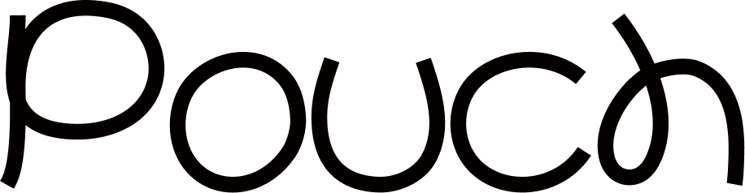
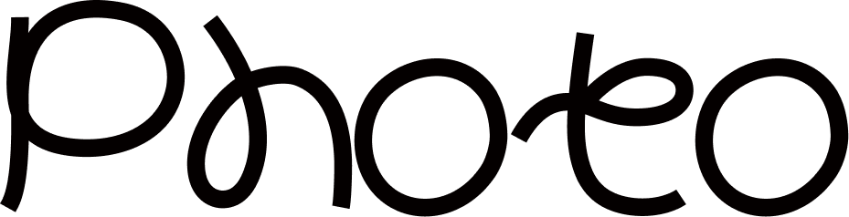
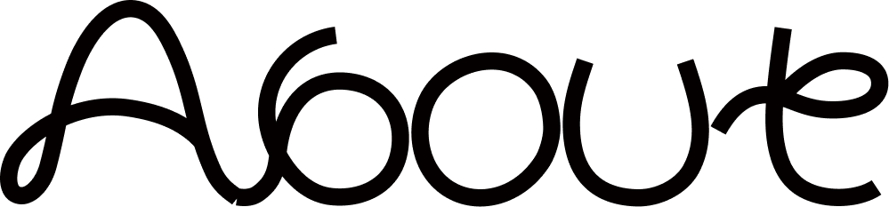

(Showreel)Scroll
(Showreel) Moving image & visual design(Seoul) 2026
(About)
A practice built on motion, rhythm and restraint — images that move so you don’t have to. Framed with care, left quiet on purpose.
(Index)
03



(About)
A practice built on motion, rhythm and restraint — images that move so you don’t have to. Framed with care, left quiet on purpose.
(Index)
03